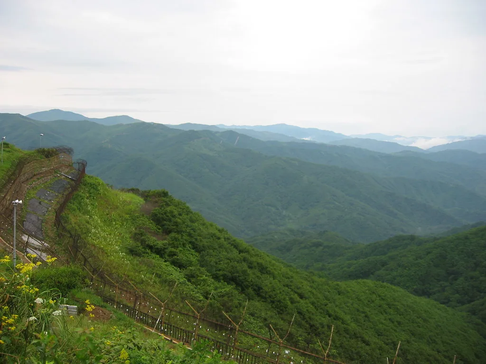
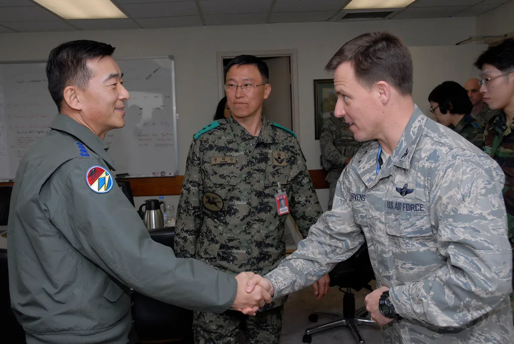

DMZ 지뢰 폭발 사고, 유엔사·軍 27일 합동조사…조사 지연 놓고 여야 공방
한국군과 주한 유엔군사령부(UNC)가 27일 경기 파주 비무장지대(DMZ)에서 발생한 지뢰 추정 폭발 사고에 대한 합동 현장조사에 나선다. 애초 29일로 예정됐던 조사 일정이 여야 공방 속에 이틀 앞당겨진 것으로, 사고 발생 엿새 만에 진실 규명의 첫발을 떼는 셈이다. 군 안팎에서는 이번 조사 결과가 향후 남북 군사분계선 일대 수색 작전 전반에도 영향을 줄 수 있다는 관측이 나온다.
사고는 지난 21일 오전 10시 50분께 육군 25사단 수색대대가 군사분계선(MDL) 이남 약 100m 지점에서 수색로 개척 작전을 벌이던 중 발생했다. 수색로를 개척하고 철수하는 과정에서 1차 폭발이 일어났고, 부상자를 구조하던 도중 2차 폭발이 잇따라 터지며 피해가 커졌다. 군 당국은 사고 직후 해당 구역에 대한 수색 작전을 전면 중단하고 통제선을 설정한 것으로 전해졌다. 인근 부대에도 비상 대기령이 내려진 것으로 알려졌다.

이 사고로 수색대대장인 중령과 중사 등 군 간부 3명이 중경상을 입었다. 이 가운데 1명은 발목이 절단되는 중상을 입어 응급헬기로 국군수도병원에 긴급 후송돼 수술을 받은 것으로 전해졌다. 나머지 부상자들도 폭발 파편에 의한 상처로 치료를 받고 있는 것으로 알려졌다. DMZ 내 지뢰 폭발 사고가 발생한 것은 2015년 서부전선 목함지뢰 사건 이후 11년 만으로, 당시에도 수색 작전 중 우리 장병이 큰 부상을 입어 사회적 파장이 컸다.
사고 직후인 21일 유엔군사령관 존 브린슨은 신속한 조사를 지시했고, 유엔사 군사정전위원회는 22일 25사단 측에 관련 자료와 현장 접근을 요청했다. 부상 장병의 바디캠 영상, 현장 사진, 부상자 인터뷰 등을 공유해달라는 것이 골자였다. 정전협정 관리 주체인 유엔사는 군사분계선 인근에서 벌어진 사고인 만큼 신속한 진상 파악이 필요하다는 입장을 밝힌 것으로 전해졌다.

그러나 야권에서는 군 당국이 이 같은 유엔사의 요청을 곧바로 받아들이지 않으면서 합동조사 일정이 당초 29일로 늦춰졌다는 의혹을 제기했다. 한동훈 국민의힘 대표는 군 당국이 유엔사의 신속한 조사 요구를 거부한 경위를 투명하게 밝혀야 한다고 지적하며 조사 지연 논란에 불을 지폈다. 여당 일각에서도 초동 대응 과정을 둘러싼 설명이 더 필요하다는 목소리가 나왔으며, 군 당국의 소통 방식을 두고도 뒷말이 이어졌다.
논란이 커지자 군 당국은 합동조사 일정을 27일로 앞당겼다. 북한군이 매설한 지뢰인지, 과거 우리 군이 설치했던 지뢰가 유실된 것인지 등 폭발물의 종류와 매설 경위 전반이 이번 조사의 핵심 쟁점이 될 전망이다. 국방부는 현장 감식과 관계자 진술을 종합해 사고 원인이 규명되는 대로 결과를 발표하겠다는 입장을 밝혔다. 조사에는 양측 폭발물 처리 전문가들이 함께 투입될 것으로 전해졌다.
여야는 이번 사고를 둘러싸고 책임 소재와 정보 공개 범위를 놓고 다음 달 국정감사에서도 공방을 이어갈 것으로 보인다. 특히 유엔사와의 협조 체계 전반에 대한 점검 요구와 함께, DMZ 수색 작전에 투입되는 장병들의 안전 장비와 매뉴얼을 재정비해야 한다는 지적도 함께 제기될 것으로 관측된다. 부상 장병들의 회복 경과에도 관심이 모아지고 있다.